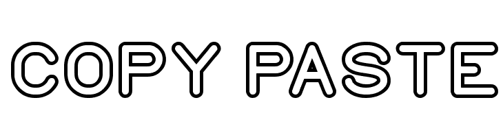

电脑用得越来越多，每天都要用上几次复制粘贴，有时候从不同网页，软件复制过来的文字往往会连着格式一起粘贴下来，之后还要花费时间手动修改格式，这似乎是一件烦心的事。但其实我们平时习惯用键盘ctrl + v，ctrl + shift + v 便可以实现无格式的粘贴，只留下我们需要的文字信息。如果是使用Mac，一般粘贴是 command + v，使用 shift + option + command + v便可以实现无格式粘贴。 Twitter Facebook Google+ Show Comments